Unit 3 Normal Distributions and Confidence Intervals
Review
The Empirical Rule
- The average life expectance of a specific brand of tires is 40,000 miles and has a mound shaped distribution (bell-shaped). The standard deviation is 7,500 miles.
- Construct and label a bell curve representing the distribution.

- Estimate the percentage of all tires that have a life expectancy:
Below 32,500 miles?
\(0.15\%+2.35\%+13.5\%=16\%\) 
Above 25,000 miles?
\(97.5\% = 13.5\% + 34\% + 34\% 13.5\% + 2.35\% + 0.15\%\) 
Between 40,000 and 55,000 miles?
\(47.5\%=34\% + 13.5\%\) 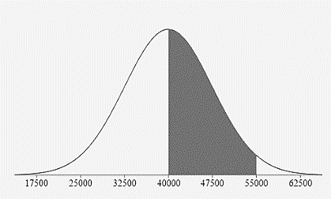
- According to dairymoos.com, the mean weight of an adult cow is 1500 lb. Assuming the weights are normally distributed with a standard deviation of 180lb.
- Construct and label a bell curve representing the distribution.

- Estimate the percentage of adult cows that weigh:
Between 1320 lbs and 1860 lbs?
\(81.5\%=34\% + 34\% + 13.5\%\) 
Less than 1500 lbs?
\(50\%=0.15\% + 2.35\% + 13.5\% + 34\%\) 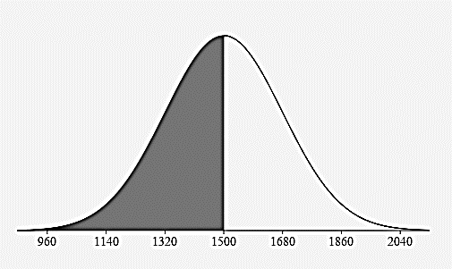
More than 1680 lbs?
\(16\%=13.5\% + 2.35\% + 0.15\%\) 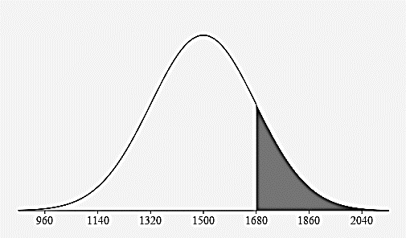
z-Scores
- Heights of the members of a high school sport have a bell-shaped distribution with a mean of 161cm and a standard deviation of 7cm.
- Find a z score for a team member that is 156 cm tall:
\( z_{156}=\frac{156-161}{7}=-0.71\) What does this z-score mean in words:
The team member’s height of 156 cm is 0.71 standard deviations below the mean of 161 cm. - Find a z score for a team member that is 170 cm tall:
\(z_{170}=\frac{170-161}{7}=1.29\) What does this z-score mean in words:
The team member’s height of 170 cm is 1.29 standard deviations above the mean of 161 cm. - Find a z score for a team member that is 161 cm tall:
\(z_{161}=\frac{161-161}{7}=0\) What does this z-score mean in words:
The team member’s height of 161 cm is 0 standard deviations above or below the mean of 161 cm.
Calculating the area under the curve:
The Empirical Rule is an estimate of probability and is limited to questions involving values with z scores of whole numbers. We need to use technology to accurately calculate probabilities (areas) for other z-scores.
- If z = -1.32, what is area to the left of the z score?
Mathematical Translation: \(P(z \lt-1.32)=\)
0.0934175089935 
- If z = 0.82, what is area to the right of the z score?
Mathematical Translation: \(P(z>0.82)=\)
0.20610805 
- If \(z_1 = -1.25\) and \(z_2 = 0.9\), what is area between the two z scores?
Mathematical Translation: \(P(-1.25\lt z \lt 0.9)=\)
0.7102901 
- Frequency Table Review
Speed mph of driver
ticketed in 30 mph zoneFrequency of speed
reported on the ticketClass Midpoint 42 – 45 10 43.5
46 - 49 14 47.5
50 - 53 7 51.5
54 - 57 3 55.5
58 - 61 1 59.5
- Estimate the mean of the data:
48.2 mph - What class contains the median?
46 - 49 mph - Is the data symmetric, skewed left or skewed right? Sketch a histogram to justify your answer.
Skewed right
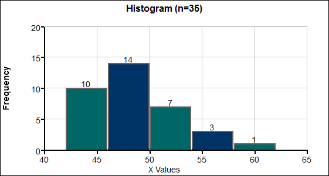
- According to MarathonGuide.com, in 2010 the average time it took to run a marathon was about 4.5 hours with a standard deviation of about 1 hour.
- Construct and label a bell curve representing the distribution.

- Find the z-score for a runner who finishes in 3.2 hours
\(z_{32}=\frac{3.2-4.5}{1}=-1.3\) What does this z-score mean in words:
A runner’s time of 3.2 hours is 1.3 standard deviations below the mean time of 4.5 hours. (faster than average) - Find the z-score for a runner who finishes in 5.2 hours:
\(z_{52}=\frac{5.2-4.5}{1}=0.7\) What does this z-score mean in words:
A runner’s time of 5.2 hours is 0.7 standard deviations above the mean time of 4.5 hours. (slower than average) - Would you consider someone who finishes a marathon in 2 hours and 15 minutes to be very fast? What would their z-score be and what does that mean?
2 hours and 15 minutes = 2.25 hours (because 15 minutes is ¼ of an hour)
\(z_{2.25}=\frac{2.25-4.5}{1}=-2.25\)
A runner’s time of 2.25 hours is 2.25 standard deviations below the mean time of 4.5 hours. This runner’s time would be more than 2 standard deviations below the mean and would be considered unusually fast.
Normal Distributions: Probabilities and Percentiles
- Scores on a history exam are normally distributed with a mean of 73 points and a standard deviation of 8 points. If one exam is randomly selected, what is the probability the score will be between 70 and 85 points?
\(\mu = \)
73 pts \(\sigma =\) 8 pts \(z_{70}=\frac{70-73}{8}=-0.375\) \(z_{85}=\frac{85-73}{8}=1.5\) \(P(70 \lt x \lt 85)=P(-0.375 \lt z \lt 1.5)\)
\( \quad 1-.353830-.066807=0.5794\)
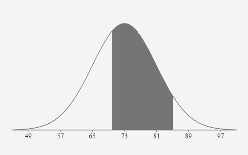
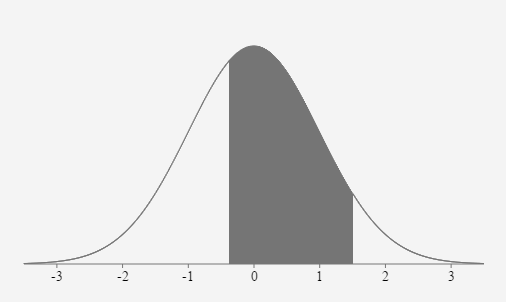
If one exam is randomly selected, the probability the score will be between 70 points and 85 points is approximately equal to 0.5794 or 57.94%.
- The distribution of IQ scores is normally distributed with a mean of 100 and a standard deviation of 15. Find the probability one randomly selected IQ score will be between 90 and 120.
\(\mu = \)
100 \(\sigma = \) 15 \(z_{90}=\frac{90-100}{15} \approx-0.6667\) \(z_{120}=\frac{120-100}{15} \approx 1.3333\) \(P(90 \lt x \lt 120)=P(-0.6667 \lt z \lt 1.3333)=0.6563\)
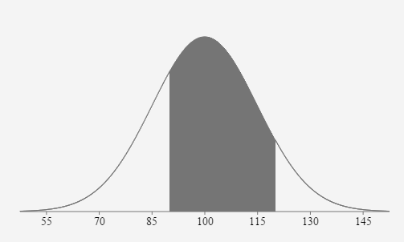
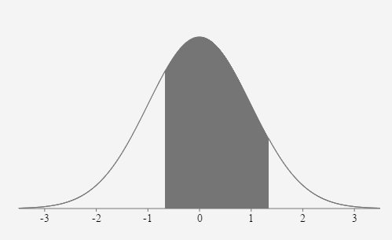
If one person’s IQ score is randomly selected, the probability their score is between 90 and 120 is approximately equal to 0.6563 or 65.63%.
- If z follows the standard normal distribution (so μ=0, and σ=1), draw a normal curve, shade the appropriate area, and find the following:
- The probability that z is between zero and 2.13
\(P(0 \lt z \lt 2.13)=.4834\)
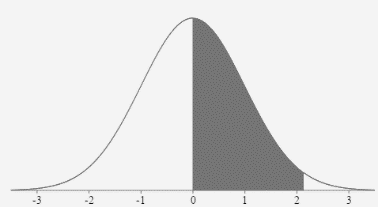
- The probability that z is less than - 1.65
\(P(z \lt -1.65)=.0495\)
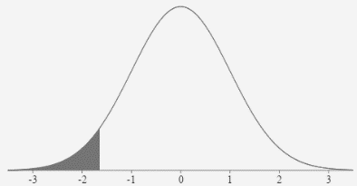
- The probability that z is between - 1.09 and 1.32
\(P(-1.09 \lt z \lt 1.32)=.7687\)
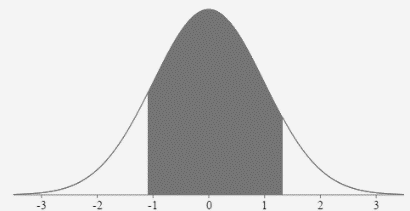
- The probability that z is greater than - 1.58
\(P(z>-1.58)=.9429\)
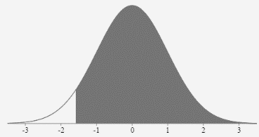
- The probability that z is between - 2.03 and zero
\(P(-2.03 \lt z \lt 0)=.4788\)
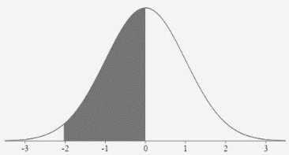
- The probability that z is greater than 15.65
\(P(z>15.65)=0+\)
- Find the value of z that separates the top 40% of the distribution from the bottom 60%.
\(\text { Area to the left }=0.60 \rightarrow z=0.253\)
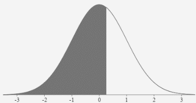
- Find Q3, the 3rd quartile of the z distribution.
\(\text { Area to the left }=0.75 \rightarrow z=0.674\)
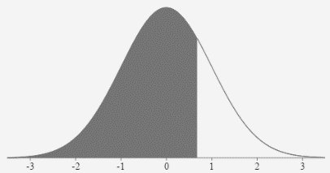
- If x follows a normal distribution with a mean of 90 and a standard deviation of 12, find the following:
- The probability that x is between 90 and 98.
\(z_{90}=\frac{90-90}{12}=0\)
\(z_{98}=\frac{98-90}{12}=0.6667\)
\(P(90 \lt x \lt 98)=P(0 \lt z \lt 0.667)=.2476\)
- The probability that x is between 85 and 96.
\(z_{85}=\frac{85-90}{12} \approx-0.417\)
\(z_{96}=\frac{96-90}{12}=0.5\)
\(P(85 \lt x \lt 96)=P(-0.417 \lt z \lt 0.5)=.3531\)
- The 25th percentile of the distribution.
\(\text { Area to the left }=0.25 \text { so } z \approx-0.674\)
\(x=\mu+z \sigma=90+(-0.674)(12)=81.91\)
\(P_{25}=81.91\)
- The lifespans of a species of fruit fly are normally distributed, with a mean of 36 days and a standard deviation of 4 days.
- Find the probability that a random selected fruit fly lives more than 30 days.
\(z_{30}=\frac{30-36}{4}=-1.5\)
\(P(x>30)=P(z>-1.5)=.9331\)
- Find the cutoff score that separates the 15% of the flies that live the shortest lives from the 85% of the flies that live the longest lives.
\(\text { Area to the left }=0.15\)
\(z \approx-1.036\)
\(x=\mu+z \sigma=36+(-1.036)(4) \approx 31.86 \text { days }\)
- Weights of river catfish are normally distributed with a mean of 16 lbs and a standard deviation of 6.25 lbs.
- What weight separates the bottom 10% from the top 90%?
\(z \approx-1.282\)
\(x = 16 + (-1.282)(6.25)=7.99\) lbs
- Find the 75th percentile.
\(z \approx 0.674\)
\(x = 16 + (0.674)(6.25)=20.21\) lbs
- Find the 50th percentile.
\( z = 0\)
\(x = 16 + (0)(6.25)=16\) lbs
- Find P30.
\(z \approx -0.524\)
\(x = 16 + (-0.524)(6.25)=12.73\) lbs
- Find P90.
\(z \approx 1.282\)
\(x = 16 + (1.282)(6.25)=24.01 \) lbs
- In response to the increasing weight of airline passengers, the FAA told airlines to assume passengers average 190 lbs in the summer (with clothes and carry-on bag) and to use a reasonable standard deviation of 35 lbs. Assume passengers’ summer weights are normally distributed. If one passenger is randomly selected, what is the probability their weight would be greater than 187 lbs?
\( \mu = \)
190 \( \sigma = \) 35 \(z=\frac{187-190}{35} \approx-0.0857\)
\(P(x>187)=P(z>-0.0857)=.5342\)
If one passenger is randomly selected, the probability that their weight is greater than 187 lbs. is 0.5342 or 53.42%.
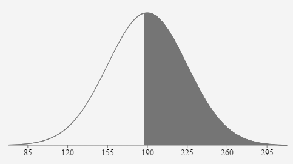
- During a certain week the mean price of gasoline in Knoxville was $1.599 per gallon, with a standard deviation of $0.095. Assume the gas prices are normally distributed.
Find the probability that a randomly selected gas station charges more than $1.499 per gallon.
\( \mu = \)
\(1.599\) \( \sigma = \) \(0.095\) \(z_{1.499}=\frac{1.499-1.599}{0.095} \approx-1.0526\)
\(P(x>1.499)=P(z>-1.053)=.8537\)
If one gas station is randomly selected, the probability that their price is greater than $1.499/gallon is 0.8537 or 85.37%.
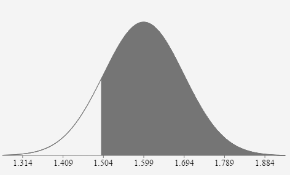
- The per capita consumption of fruits and vegetables (fresh weight equivalents) in the US in 2000 was 707.7 lbs. Assume a normal distribution with a standard deviation of 200 lbs. If 1 person is randomly selected, what is the probability their fruit consumption was between 400 lbs and 800 lbs in 2000? Adapted http://www.usda.gov/factbook
\( \mu = \)
707.7 \( \sigma = \) 200 \(z_{400}=\frac{400-707.7}{200} \approx-1.539\)
\(z_{800}=\frac{800-707.7}{200}=0.462\)
\(P(400 \lt x \lt 800)=P(-1.539 \lt z \lt 0.462)=.6161\)
If one person is randomly selected, the probability that fruit consumption is between 400 and 800 lbs is .6161 or 61.61%.
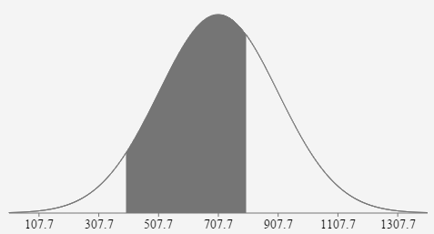
The Central Limit Theorem
- The mean amount of cash students at Pellissippi carry in their pocket is $15.00 and the standard deviation is $9.00. If 36 students are randomly selected, what is the probability the mean amount of cash in their pocket is less than $14.00?
We can adjust the standard deviation and use the CLT because it is a distribution of sample means with sample size (n=36) greater than 30.
\( \mu = \)
15 \( \sigma\)\( \overline{x} \) = \(\frac{9}{\sqrt{36}}=1.5\) \(z_{14}=\frac{14-15}{1.5}=-0.6667\)
\(\mathrm{P}(\overline{x} \lt 14)=\mathrm{P}(\mathrm{z} \lt -0.667)=.2525\)
If 36 students are randomly selected, the probability that the mean amount of cash in their pocket is less than $14 is .2525 or 25.25%.
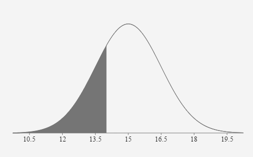
- The mean amount of cash students at Pellissippi carry in their pocket is $15.00 and the standard deviation is $9.00. If 18 students are randomly selected, what is the probability the mean amount of cash in their pocket is greater than $20.00?
This is an
UNKNOWN distribution because the population distribution cannot be assumed to be normal and the sample size (n=18) is less than 30. This problem cannot be solved using the normal distribution curve. The population is not normally distributed. The sample size (n=18) is less than 30.
- In response to the increasing weight of airline passengers, the FAA told airlines to assume passengers average 190 lbs in the summer (with clothes and carry-on bag) and to use a reasonable standard deviation of 35 lbs. Assume passengers’ summer weights are normally distributed. If twenty-five passengers are randomly selected, what is the probability their mean weight would be greater than 187 lbs?
We can adjust the standard deviation and use the CLT because it is a distribution of sample means and the population the sample was randomly selected from is normally distributed.
\( \mu = \)
190 \( \sigma = \frac{35}{\sqrt{25}}=7\) \(z_{187}=\frac{187-190}{7} \approx-0.4286\)
\(\mathrm{P}(\overline{x}>187)=\mathrm{P}(z>-0.4286)=.0 .6659\)
If 25 passengers are randomly selected, the probability that their mean weight is greater than 187 lbs. is 0.6659 or 66.59%.
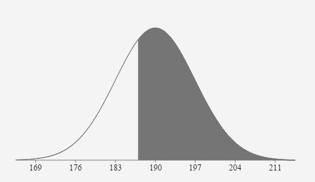
- During a certain week the mean price of gasoline in Knoxville was $1.599 per gallon, with a standard deviation of $0.095. Assume the gas prices are normally distributed.
We can adjust the standard deviation and use the CLT because it is a distribution of sample means with sample size (n=35) greater than 30.
\( \mu = \)
\(1.599\) \( \sigma\)\( \overline{x} \) = \(\frac{.095}{\sqrt{35}}=0.016\) \(z_{1499}=\frac{1.499-1.599}{\left(\frac{.095}{\sqrt{35}}\right)} \approx-6.2275\)
\(\mathrm{P}(\overline{x}>1.499)=\mathrm{P}(z>-6.2275)=\sim 1\)
If 35 gas stations are randomly selected, the probability that their mean price is greater than $1.499/gallon is about 1 or about 100%.
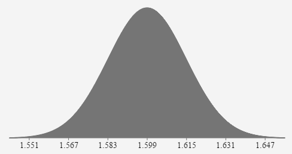
- The population mean annual salary for conservation scientists is $64,420. Assume a standard deviation of $15,200. If 35 conservation scientists are randomly selected, what is the probability their mean income is between $$60,000 and $70,000? Adapted from www.bls.gov
We can adjust the standard deviation and use the CLT because it is a distribution of sample means with sample size (n=35) greater than 30.
\( \mu = \)
64420 \( \sigma = \) \(\frac{15200}{\sqrt{35}}=2569.269\) \(z_{60000}=\frac{60000-64420}{\left(\frac{15200}{\sqrt{35}}\right)} \approx \frac{60000-64420}{2569.269} \approx-1.72\)
\(z_{60000}=\frac{70000-64420}{\left(\frac{15200}{\sqrt{35}}\right)} \approx \frac{70000-64420}{2569.269} \approx 2.172\)
\(\mathrm{P}(60000 \lt \overline{x} \lt 70000)=\mathrm{P}(-1.72 \lt \mathrm{z} \lt 2.172)=.9424\)
If 35 scientists are randomly selected, the probability that the mean income is between $60,000 and $70,000 is .9424 or 94.24%

- To determine the average wait time at Taco Bell in the Miami area, 16 graduate students randomly selected 16 taco bell stores. Each student visited a Taco Bell store at 12:15 pm and ordered a crunchy beef taco, a burrito supreme, and a soda. The wait time to receive the meal was recorded for each restaurant. The distribution is normal with a mean of 22.4 minutes and a standard deviation of 6.2 minutes.
If 10 Taco Bells are randomly selected, what is the probability the mean wait time will be between 19 minutes and 20 minutes?
We can adjust the standard deviation and use the CLT because the distribution of the population was known to be normal.
\( \mu = \)
22.4 \( \sigma = \) \(\frac{6.2}{\sqrt{10}}\approx{1.961}\) \(z_{19}=\frac{19-22.4}{(6.2 / \sqrt{10})} \approx \frac{19-22.4}{1.961} \approx-1.734\)
\(z_{20}=\frac{20-22.4}{(6.2 / \sqrt{10})} \approx \frac{20-22.4}{1.961} \approx-1.224\)
\(P(19 \lt \overline{x} \lt 20)=P(-1.734 \lt z \lt -1.224)=.069\)
Confidence Intervals: Population Mean
- A simple random sample of 125 2014 graduating seniors’ SAT scores has a mean of 1522 and a standard deviation of 250.
- Construct a 95% confidence interval estimate of the mean SAT score for all 2014 seniors.
\(E=t\left(\frac{s}{\sqrt{n}}\right)\) \(t_{.025(124)}=1.9793\)
\(E=1.9793\left(\frac{250}{\sqrt{125}}\right)=44.25849 \approx 44.3\)
\(C I=1522 \pm 44.3\)
\((1477.7,1566.3)\)
\(1477.7 \lt \mu \lt 1566.3\)
We are 95% confident that the mean SAT score for all 2014 seniors is between 1477.7 and 1566.3.
- Construct a 99% confidence interval estimate of the mean SAT score for all 2014 seniors.
\(E=t\left(\frac{s}{\sqrt{n}}\right)\) \(t_{.005(124)}=2.6161\)
\(E=2.6161\left(\frac{250}{\sqrt{125}}\right)=58.4978 \approx 58.5\)
\(C I=1522 \pm 58.5\)
\((1463.5,1580.5)\)
\(1463.5 \lt \mu \lt 1580.5\)
We are 99% confident that the mean SAT score for all 2014 seniors is between 1463.5 and 1580.5.
- Which of the preceding confidence intervals is wider? Why?
The 99% confidence interval (#2) is wider because as the confidence level increases, the margin of error increases as well.
![A horizontal line with the number 1522 marked on it. A vertical dotted line is perpendicular to 1522. Above the horizontal line is a number line. The number 44.3 is written above the number line and to the left of the vertical line. The number 44.3 is written above the number line and to the right of the vertical line. This number line is the 95% confidence interval. Above that number line is another one that represents the 99% confidence interval. The number 58.5 is written above the number line and to the left of the vertical line. The number 58.5 is written above the number line and to the right of the vertical line.](images/u3reviewp20ck.png)
- A survey of 153 randomly selected high school students with unlimited texting capability on their mobile device reported the mean number of text messages sent daily by the students was 107 texts with a standard deviation of 27.5 texts.
- Create a 90% confidence interval for the mean number of texts sent daily for the population of all high school students with unlimited texting capability on their mobile device.
Critical Value: \(t_\frac{\alpha}{2} = t_\text{0.05 area to the right (152 degree of freedom)} = 1.654939\)
\(\text { Margin of error, } E=3.679331\)
\(90 \% \text { Confidence Interval } 103.3 \lt \mu \lt 110.7\)
- What does “90% confidence” mean in this context?
We are 90% confident the true mean of daily text messages sent by all high school students with unlimited texting capabilities on their phone is between 103.3 texts and 110.7 texts.
- If we INCREASED the confidence level to 99% what would happen to:
The Critical Value?
The new Critical Value would be \( t_\frac{\alpha}{2} = 2.608563. \) An INCREASE in the Confidence Level would INCREASE the Critical Value.
The Margin of Error?
The new Margin of Error would be E = 5.8. An INCREASE in the Confidence Level would INCREASE the Margin of Error.
The Confidence Interval?
The new Confidence Interval would be \(101.2 \lt \mu \lt 112.8\). An INCREASE in the Confidence Level would WIDEN the Confidence Interval.
- A telephone survey of 1000 adults was taken shortly after the U.S. began bombing Iraq. If 832 voiced their support for this action, create a 99% confidence interval for the proportion of all US residents who initially supported the US bombing in Iraq and interpret the interval.
Margin of error, E = 0.0304532
99% Confidence Interval \(0.8015468 \lt p \lt 0.8624532\)
We are 99% confident the true proportion of all US residents who initially supported the US bombing in Iraq is between .8015 and .8625 or 80.15% and 86.25%.
- An assembly line does a quality check by sampling 50 of its products. It finds that 16% of the parts are defective.
- Create a 95% confidence interval for the percent of defective parts for the company and interpret this interval.
Margin of error, E = 0.1016161
95% Confidence Interval \(0.0583839 \lt p \lt 0.2616161\)
We are 95% confident the true proportion of defective parts is between .0584 and .2616 or 5.84% and 26.16%.
- If we decreased the confidence level to 90% what would happen to:
- the critical value?
The critical value decreases from 1.96 to 1.645 with the CL decrease. - the margin of error?
The margin of error decreases from .1016 to .0853 with the CL decrease. - the confidence interval?
The confidence interval gets narrower with the CL decrease.
- the critical value?
- If the sample size were increased to 200, the same sample proportion were found, and we did a 95% confidence interval; what would happen to:
Use 95% CL n=200 x=(.16)(200) = 32
- the critical value?
Critical value remains the same because the Confidence Level remained 95% - the margin of error?
The Margin of Error decreases with the increased sample size. - the confidence interval?
The confidence interval is narrower with the larger sample size.
- the critical value?
- Suppose a 90% confidence interval for the mean grade on an exam is stated as (74.6, 93.1). What is the sample mean used to create this confidence interval?
\((74.6+93.1) / 2=83.85\) What is the margin of error?
\((93.1-74.6) / 2=9.25\) \(\text { Check: } 83.85-9.25=74.6\)
\(83.85+9.25=93.1\)
adapted from: mcnelis.wikispaces.com
Minimum Sample Size to Estimate a Population Mean
- We want to estimate the mean time students spend each week playing video games in a 15 week semester. How many students must be surveyed if we want to be 95% confident that the sample mean is within 0.25 hours of the true population mean. Assume the population standard deviation is known to be 1.5 hours.
\(n=\left[\frac{(1.96)(1.5)}{.25}\right]^{2}=139 \text { students must be surveyed }\)
- We want to estimate the mean weekly amount of gasoline each student uses in their primary car. How many students must be surveyed if we want to be 90% confident that the sample mean is within 0.5 gallons of the true population mean. Assume the population standard deviation is known to be 2 gallons.
\(n=\left[\frac{(1.645)(2)}{.5}\right]^{2}=44 \text { students must be surveyed }\)
Confidence Intervals: Population Proportion
- A survey of 1,000 adults were asked if they would give personal data to a company for credit purposes. There were 290 respondents who said they would never give personal data to a company.
- Find the sample proportion of people who would never give personal data to a company.
\(\hat{p}=\frac{290}{1000}=.29\)
- Construct a 90% confidence interval estimate of the proportion of all people who would never give personal data to a company.
\(E=1.645 \sqrt{\frac{(.29)(.71)}{1000}}=.0236\)
\(C I=.29 \pm .0236\) \(.2664 \lt p \lt .3136\)
We are 90% confident that the true proportion of adults who would never give personal data to a company is between .2664 and .3136.
- Construct a 99% confidence interval estimate of the proportion of all people who would never give personal data to a company.
\(E=2.575 \sqrt{\frac{(.29)(.71)}{1000}}=.0369\)
\(C I=.29 \pm .0369\) \(.2531 \lt p \lt .3269\)
We are 99% confident that the true proportion of adults who would never give personal data to a company is between .2531 and .3269.
- Find the sample size necessary to estimate the proportion of people who would never give personal data to a company, if you want a 95% confidence interval and a 0.02 margin of error. (Use your answer from part a as a prior estimate of the true proportion.)
\(n=\frac{\left(1.96^{2}\right)(.29)(.71)}{02^{2}}=1978\)
- You wish to estimate with 99% confidence, the proportion of computers that need repairs or have problems by the time the product is five years old. Your estimate must be accurate within 3.5% of the true proportion. Assume no prior estimate of p is available. What is the sample size needed?
\(n=\frac{\left(2.575^{2}\right)(.25)}{.035^{2}}=1354\)
- You want to estimate the percentage of republicans among college students. How many students must you survey in order to be 99% confident that your sample proportion is within 5% of the true population percentage? No prior estimate of this percentage is available.
\(n=\frac{\left(2.575^{2}\right)(.25)}{.05^{2}}=664\)
- Why do we need to construct a confidence interval if we know the proportion of the sample?
Because we can’t assume the proportion for the population is exactly equal to the proportion for the sample.
- Find the critical value that corresponds to an 85% confidence level.
\(z_{.075} = 1.44\)
- Find the critical value that corresponds to α= .05
\(z_{.025} = 1.96\)
- Express the confidence interval \(0.125 \lt p \lt 0.515\) in the form \(\hat{p} \pm E\).
\(.32 \pm .195\)
- Express the confidence interval 0.432 ± 0.231 in the form \(\hat{p}-\mathrm{E} \lt \mathrm{p} \lt \hat{p}+\mathrm{E}\)
\(.201 \lt p \lt .663\)
- Find the best point estimate and the margin of error given the confidence interval (0.234,0.854)
\( \hat{p} = \)
0.544 E = 0.31 - Find the best point estimate and the margin of error given the confidence interval \(0.123 \lt p \lt 0.433\)
\( \hat{p} = \)
0.278 E = 0.155 - Find the Margin of Error for the population proportion given:
n = 1000, x = 250, 90% confidence
E = .0225
- Construct the Confidence Interval for the population proportion given:
n = 200, x = 50, 99% confidence
\((.1712, .3288) \quad \text { or } \quad .25 \pm .0788\)
- Determine the sample size (n), given E = 0.025, confidence level is 95%, \( \hat{p} \text{ and } \hat{q}\) are unknown.
n = 1537
- Determine the sample size (n), given Margin of Error is three percentage points , confidence level is 95%, \( \hat{p} \) is estimated 23% from a prior study.
n = 756
- Heights of the members of a high school sport have a bell-shaped distribution with a mean of 161cm and a standard deviation of 7cm.
- According to dairymoos.com, the mean weight of an adult cow is 1500 lb. Assuming the weights are normally distributed with a standard deviation of 180lb.
- Construct and label a bell curve representing the distribution.